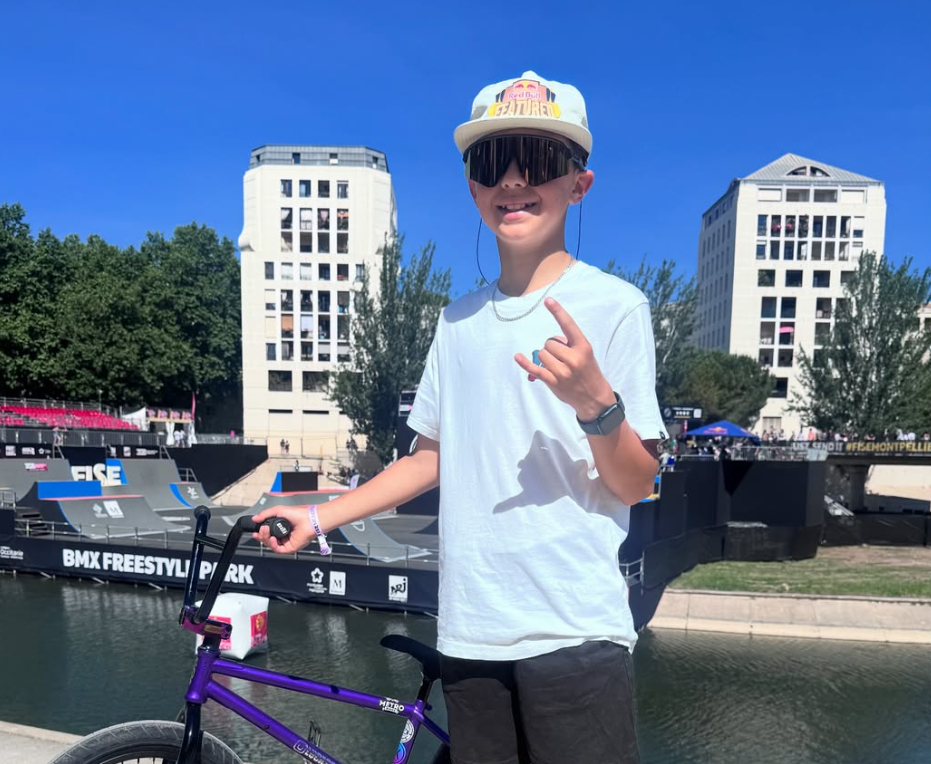

A growing rider directory covering BMX Freestyle Park and Flatland—from rising talent to world champions.
Showing 15 rider profiles

Photo supplied to RideWireBMX
UNITED KINGDOMPARK
Lucas Silva
Lucas is building an impressive UK BMX record. He won the 2024 Backyard Jam Under-12 series overall, then moved into Under-15 competition and earned 3rd at the 2025 National Championships.
Rising talent · Backyard Jam 2024 overall winner (U12)
One of Park’s most technically progressive riders, Martin became the first men’s BMX Freestyle Olympic champion at Tokyo 2020. He added his third UCI World title in 2024.
Tokyo 2020 Olympic champion · 3× UCI World Champion
Roberts helped set the standard for women’s Park riding. She took Olympic silver at Tokyo 2020 and claimed her sixth UCI World Championship title in 2024.
Worthington made history at Tokyo 2020, becoming the first Olympic champion in women’s BMX Freestyle Park. In the final she landed the first 360 backflip by a woman in competition.
Tokyo 2020 Olympic champion · Historic 360 backflip
Torres Gil delivered the winning 94.82-point run in Paris to become Argentina’s first Olympic champion in BMX Freestyle Park. He also took silver at the 2024 UCI World Championships.
The Swiss-American rider brought a distinctive, composed style to the Olympic stage, earning bronze in the first women’s BMX Freestyle Park competition at Tokyo 2020.
Dandois is one of Flatland’s defining riders, known for linking intricate, original combinations with smooth flow. He captured his tenth UCI World title in 2024, then announced it was his final competition.
Photo: Keith Mulligan / U.S. Air Force · Public domain
CANADAPARK
Drew Bezanson
Known for huge, technical park lines and inventive transfers, Bezanson became a Simple Session standout with four wins in 2010, 2011, 2012 and 2014. He has also competed at X Games and Dew Tour.
A defining figure in BMX Freestyle, Mirra helped bring the sport to a global audience through contest dominance and video games. He earned 24 X Games medals across BMX and RallyCross, including 14 golds.
Williams crosses BMX and scooter disciplines, bringing a progression-first approach to big air. He won the BMX Best Trick event at Nitro World Games in back-to-back years and has also earned X Games BMX medals.
Back-to-back Nitro World Games BMX Best Trick winner
Reynolds is one of street BMX’s most accomplished contest riders, known for precise, difficult lines and a focused approach. He was one of four riders featured in Nike 6.0’s 2008 film Writing on the Wall.
Photo shared via Dennis Enarson’s Facebook · Original post
UNITED STATESSTREET · PARK
Dennis Enarson
Enarson developed into a versatile rider across street, park and dirt, pairing technical riding with big, high-impact moves. His part in Writing on the Wall captured an early chapter in a career that would span major contests and influential video projects.
Sylvester brought a distinctive New York perspective to street BMX and to the Nike 6.0 film Writing on the Wall. His later GO! projects turned riding through cities into a story-led series that reached far beyond the BMX scene.
Spinner became known for fast, technical combinations and an inventive approach to linking tricks. As one of the four riders in Writing on the Wall, he helped represent a generation pushing street and park riding in new directions.
Raised in Tadley, Hampshire, Miller grew from a local trails scene into a creative street and park rider. He turned pro after early contest wins and became known for relaxed, flowing video parts, including the classic Ride UK feature already in our Videos section.
Proper Bikes · 2011 Vans Rebel Jam Style in the Park finalist
.jpg?width=1100)
_2017.jpg?width=1000)

.jpg?width=1000)

_2024.jpg?width=1000)


.jpg?width=1100)